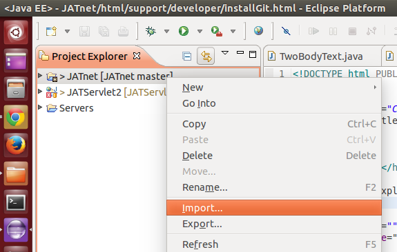
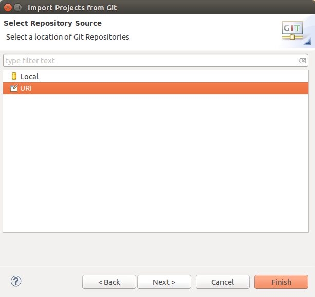

Select import from Git:

Enter the github repository URILeave the branch selection on master and click on Next.
Enter the location of the local copy.
Wait until the import process has completed.
Now leave the selection on new project wizard and click on Finish.
You can choose a general project at this point.
Enter the name of the project and click on Finish.